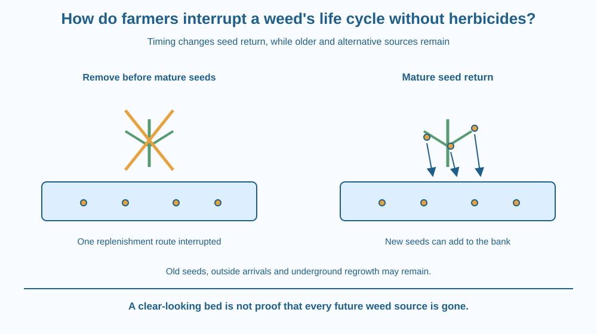

Explain why the timing of weed removal matters as well as the amount removed. Connect current competition with the soil seed bank and future emergence. Distinguish preventing seed return from eliminating every possible source of weeds, without using herbicides or handling unknown plants.
Two garden teams remove similar-looking weeds. One works before the plants produce mature seeds; the other waits until seed heads are ready to shed. Both beds look clearer afterwards, yet their future weed problems may differ.
The visible plants are only part of the population. Seeds already in the soil and new seeds returned by mature plants can influence later emergence. A management decision therefore changes both today's competition and tomorrow's starting conditions.
The useful question is where the next generation of weeds could come from and which routes an action interrupts.
A weed is a plant growing where it is not wanted in a particular managed setting. The same species can have a different role elsewhere. The term describes a relationship to the management goal, not a separate biological group of universally bad plants.
Weeds can compete with a crop for light, water and nutrients. Removing them can reduce that current competition, depending on timing and conditions. However, removing visible growth does not necessarily remove the seeds or underground structures that support future growth.
Many weeds add seeds to the soil seed bank, the collection of viable seeds in or on the soil. Seeds can arrive from the present plants, nearby areas, moved soil, equipment or other routes. A bed that looks empty can therefore retain the capacity for future emergence.
Removing suitable weeds before mature seed production can reduce the new seed contribution from those plants. The action does not guarantee an empty seed bank, but it interrupts one source of replenishment. This is a management-timing principle rather than a repeated lesson on reproductive anatomy.
If mature seeds are already present, handling can scatter them. A plan must account for seed maturity and disposal rather than simply shaking every removed plant over the bed. Actual species and local advice matter, so students should not improvise disposal methods for unknown weeds.
Some unwanted plants also regrow from roots, rhizomes or other persistent structures. Cutting shoots may suppress current competition while leaving regrowth potential. Preventing seed return is valuable for appropriate species but does not address every survival route.
Mulch, crop cover, suitable mechanical removal and cultivation timing can all contribute to non-herbicide management. Each has conditions and limitations. A surface cover may suppress some emergence without stopping every established plant or every perennial underground structure.
Repeated inspection is therefore useful. A one-time clearing can be followed by later emergence from the existing bank or new arrivals. The goal is a managed reduction in unwanted competition and future replenishment, not a promise that a single action permanently erases all weeds.
Draw a bank with incoming and outgoing arrows. The incoming arrow represents seeds added; the outgoing arrow represents germination or loss of viability. Put visible plants above the bank.
Now remove one plant before seed maturity and cross out its seed-return arrow. Leave the older bank and other incoming routes in place. This shows both the benefit and the limit of the action.
Add a second plant with an underground regrowth structure. Mark that pathway separately from seeds. A good management model identifies several routes instead of assuming every species restarts only from one newly scattered seed.
The SVG compares removal before mature seed return with later handling of a seed-bearing plant. A lower band represents an existing soil seed bank in both cases.
Arrows identify seed input, possible later emergence and an independent underground regrowth route. The diagram labels these as examples because weed species differ. It does not show the internal reproductive process or claim a measured number of seeds per plant.
A management strip links observation, timing and follow-up. Its purpose is to explain why the state of the plant at removal affects future conditions, not to provide identification or disposal instructions for a particular harmful species.

Farmers and gardeners in India use different methods depending on the crop, labour, tools and weed species. Timing a safe removal before seed return can complement other practices, while a perennial species may require a different plan.
A school garden can map where unwanted plants appear without pulling them. Repeated observations may reveal fresh emergence after an initial clearing. That pattern does not mean the earlier work had no effect; the starting seed bank and other sources still matter.
Unknown plants can irritate skin or have sharp parts. Students should not handle them for this lesson. Adult identification and safe gardening guidance belong before any real removal activity.
Use paper and small drawn seed symbols. Do not collect, scatter or grow weeds.
Explain which pathway each action changes. The number of symbols is invented for the model and is not a real estimate of seed abundance. Ask a partner why a visibly clear bed can still produce later seedlings without any new seeds arriving that day.
Two beds look equally clear after weeding. One had mature seeds shed just before clearing, while the other did not. Why might their later emergence differ?
Now consider a perennial weed growing from underground structures. Explain why preventing seed return may help its spread but still leave a local regrowth problem. A useful plan matches the pathway rather than applying one slogan to every species.
What is the soil seed bank?
Answer: A — The seed bank can support later emergence even when visible plants are absent.
Why can removing weeds before mature seed production help?
Answer: C — Early removal can interrupt seed return from those plants.
A weed regrows from a rhizome after shoots are cut. What does this show?
Answer: B — Some plants persist through underground structures as well as seeds.
Create a non-herbicide observation plan for a school garden using photographs or adult-led records. Track visible growth, seed-maturity stage, possible incoming routes and later reappearance.
Do not ask students to identify or handle unknown plants. Your plan should explain one advantage of early timing and one reason follow-up remains necessary. End by distinguishing today's cleared appearance from the hidden starting conditions beneath the soil surface.
A successful action can leave an invisible problem partly unchanged. Removing a visible weed can reduce competition immediately while an existing seed bank remains. This is why judging management only by a photograph taken right after clearing misses the part of the system that influences the next season.
Removing appropriate weeds before mature seed return can reduce future replenishment, but existing seeds, new arrivals and underground regrowth can still require follow-up.